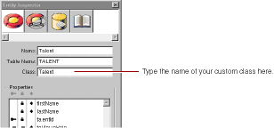

PATH
Documentation > WebObjects 4.5 >
Getting Started With WebObjects
Specifying Custom Enterprise Object Classes
Unless you specify otherwise, EOModeler maps entities to the EOGenericRecord class. When you want to use a custom class instead, you need to specify that custom class in the model.
-
In EOModeler, inspect the Talent entity.
-
In the Entity Inspector for Talent, type Talent in the Class field.

-
Set the MovieRole entity's class to MovieRole.
Now you can generate the source files for your Talent and MovieRole classes.
© 1999 Apple Computer, Inc. – (Last Updated 24 Aug 99)